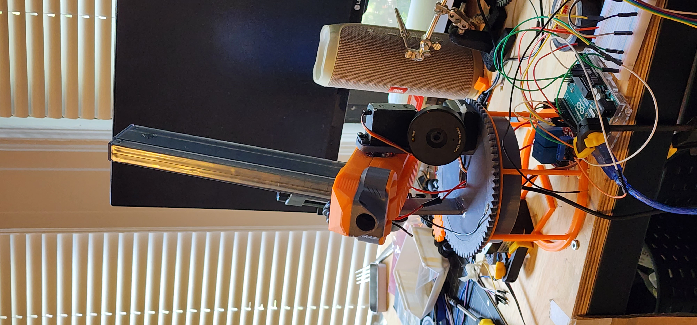

Home
Projects
Home
Projects

Computer Vision Nerf Turret
A 2 Axis nerf turret that uses the computer vision to send positional data to an Arduino microcontroller. A servo controls the pitch and a stepper motor controls the yaw.
Website Templates
created with
Website Builder Software
.